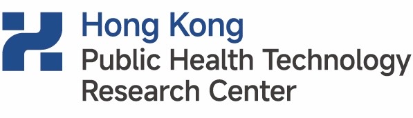

SECTOR · 01
公共部门
Government & Public Sector面向各级政府、卫生健康部门与医保机构，提供公共卫生政策研究、健康城市建设建议、慢病防控方案评价、卫生经济学分析与区域健康数据智库支持。
- 公共卫生政策研究与评估
- 健康城市建设战略建议
- 慢病防控方案设计与评价
- 区域健康数据智库支持
中心面向公共部门、医疗与公共卫生机构、高校院所、健康产业与康养机构、社会组织以及社会大众提供科研、咨询、评价、转化与健康管理服务，构建科研、政策、产业与公众健康的协同生态。
中心与国内外学术机构、研究中心建立长期战略合作关系，共同推动真实世界研究、公众健康科学与健康产业转化的国际化发展。


期待与更多国内外机构建立合作关系。
建立机构合作中心以真实世界研究为方法，构建覆盖科研、评价、转化与服务的完整闭环，为合作伙伴提供从研究设计到成果落地的端到端支持。
多源真实世界数据采集、治理、标准化、脱敏与合规管理，构建可持续的健康数据基础设施。
队列研究、务实性试验、因果推断、混合方法研究，生成高质量真实世界证据。
卫生经济学评价、政策建议、决策简报与智库报告，支持政府与产业方决策。
实施科学方法支撑社区、企业、酒店与康养机构落地推广，识别影响实施效果的关键因素。
服务标准建设、白皮书发布、品牌科学背书与产业转化咨询，让证据驱动产业升级。
中心面向五类机构合作方与社会大众个人，提供差异化的科研、咨询、评价、转化与健康管理服务方案。
面向各级政府、卫生健康部门与医保机构，提供公共卫生政策研究、健康城市建设建议、慢病防控方案评价、卫生经济学分析与区域健康数据智库支持。
面向医院、社区卫生服务机构、疾控中心与基层医疗体系，提供真实世界研究设计、队列建设、慢病管理项目评价、基层公共卫生干预优化与医防融合研究支持。
面向国内外高校与科研院所，开展联合课题、数据合作、研究生联合培养、博士后项目、国际会议与学术平台共建。
面向数字健康产品方、健康管理服务机构、酒店集团、度假区、康养机构与文旅综合体，提供产品真实世界评价、用户依从性研究、健康款待学诊断、健康空间评价、服务标准设计与品牌科学背书。
面向社区、学校与企业组织，提供人群健康风险评估、生活方式干预项目、员工健康管理、心理健康促进与长期效果监测。
面向关注主动健康、生活方式优化与日常恢复体验的社会大众，由健康管理服务中心提供基础健康评估、健康数据洞察、N-of-1 营养实验、餐后反应分析、HRV 生物反馈、昼夜节律优化与沉浸式感官恢复等非诊疗型健康管理服务。
围绕真实世界研究的全流程，中心提供六类核心服务，根据合作方需求灵活组合。
| 服务类别 | 服务范围 | 典型交付成果 |
|---|---|---|
| 研究设计与方法学 Research Design |
队列研究、务实性试验、目标试验模拟、混合方法研究、实施科学研究方案设计。 | 研究方案、方法学评审报告、伦理申请支持文件、统计分析计划。 |
| 数据治理与平台 Data Governance |
多源数据整合、标准化、脱敏、质控、权限管理与隐私计算方案。 | 数据治理框架、合规审查报告、数据沙箱与可信数据空间方案。 |
| 效果与价值评估 Evaluation |
健康干预效果评价、卫生经济学分析、健康技术评估、服务价值评估。 | 真实世界证据报告、成本效用分析、HTA 报告、价值评估白皮书。 |
| 实施与推广支持 Implementation |
项目落地实施、过程评价、规模化推广路径设计与培训体系建设。 | 实施路径图、质量控制标准、培训课程、效果监测仪表盘。 |
| 政策与智库 Policy & Think Tank |
政策评估、决策简报、蓝皮书发布、行业标准研究。 | 政策建议报告、蓝皮书、决策简报、媒体传播稿。 |
| 产业转化与背书 Translation |
康养产品科学验证、品牌科学背书、健康空间评价、服务标准制定。 | 科学验证报告、品牌白皮书、空间健康设计指南、服务认证标准。 |
中心拟定期发布系列研究成果，形成具有区域影响力与国际识别度的智库品牌。
聚焦大湾区健康趋势、慢病负担、生活方式风险与真实世界研究进展，面向政府与学界发布的旗舰成果。
年度发布构建琴澳人群主动健康指数，监测生活方式、健康行为与健康结局的长期变化，支撑跨境健康治理决策。
年度发布评估健康服务、康养文旅与高端健康产业的经济价值与社会价值，为产业升级与政府投资提供证据支持。
年度发布更多专题简报、政策白皮书与行业标准研究成果将陆续发布。
订阅成果发布未来健康科学的发展不只发生在医院和实验室，也发生在社区、家庭、工作场所、城市空间、酒店、旅程和每一个真实生活场景之中。
横琴真研健康科学中心